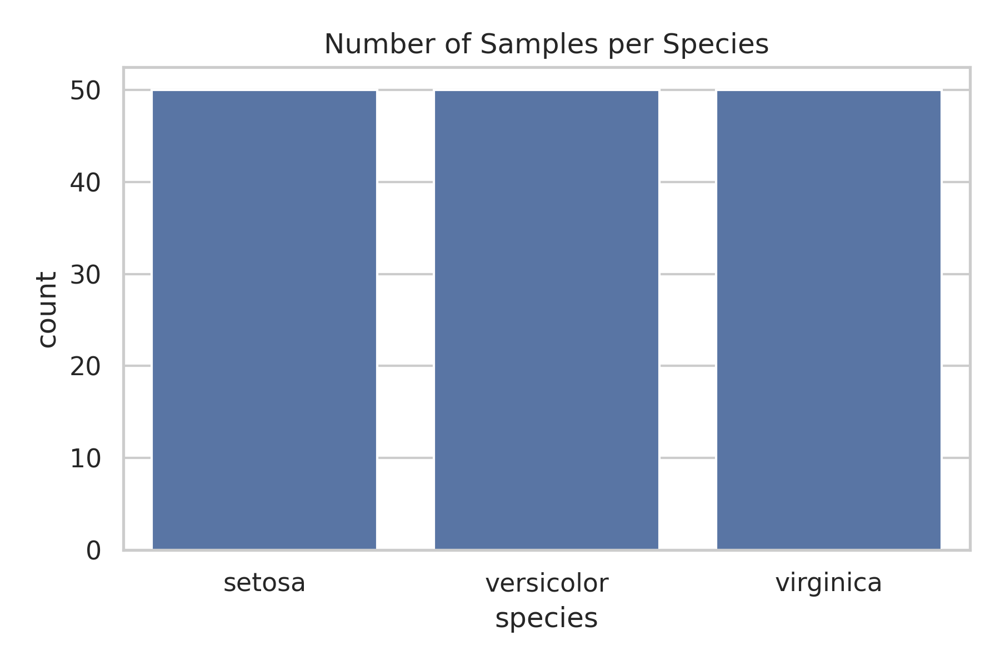
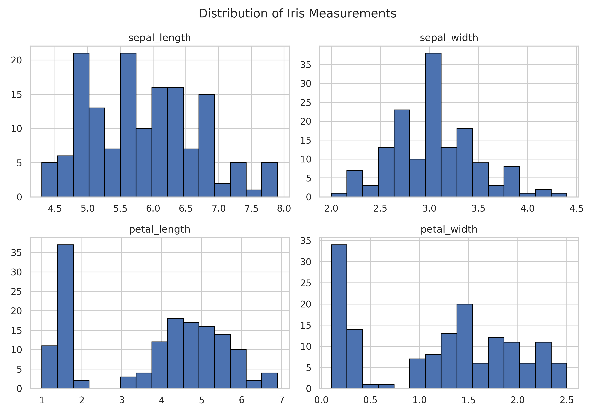
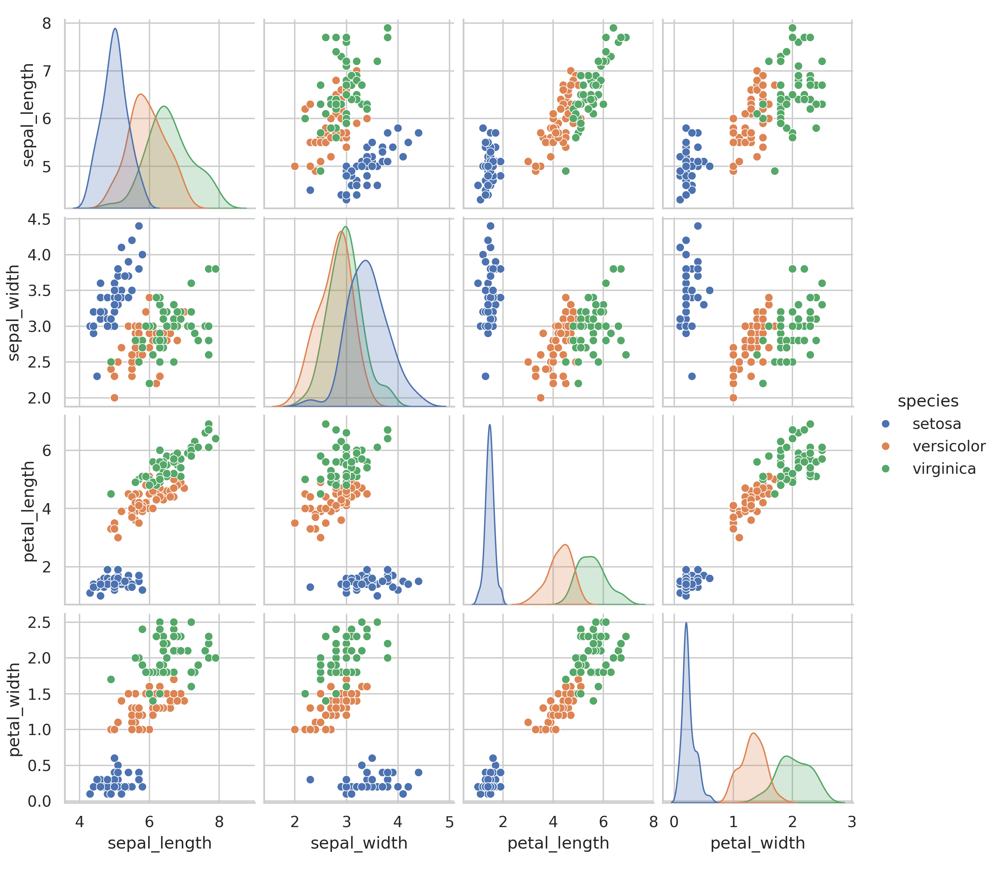
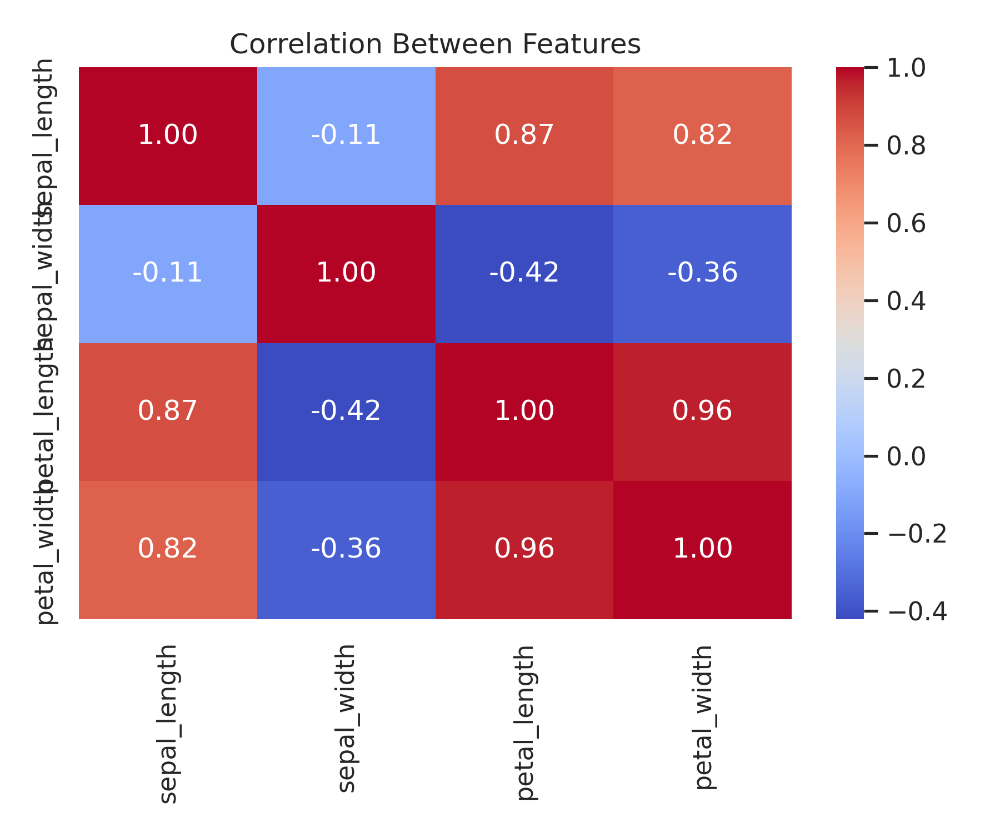
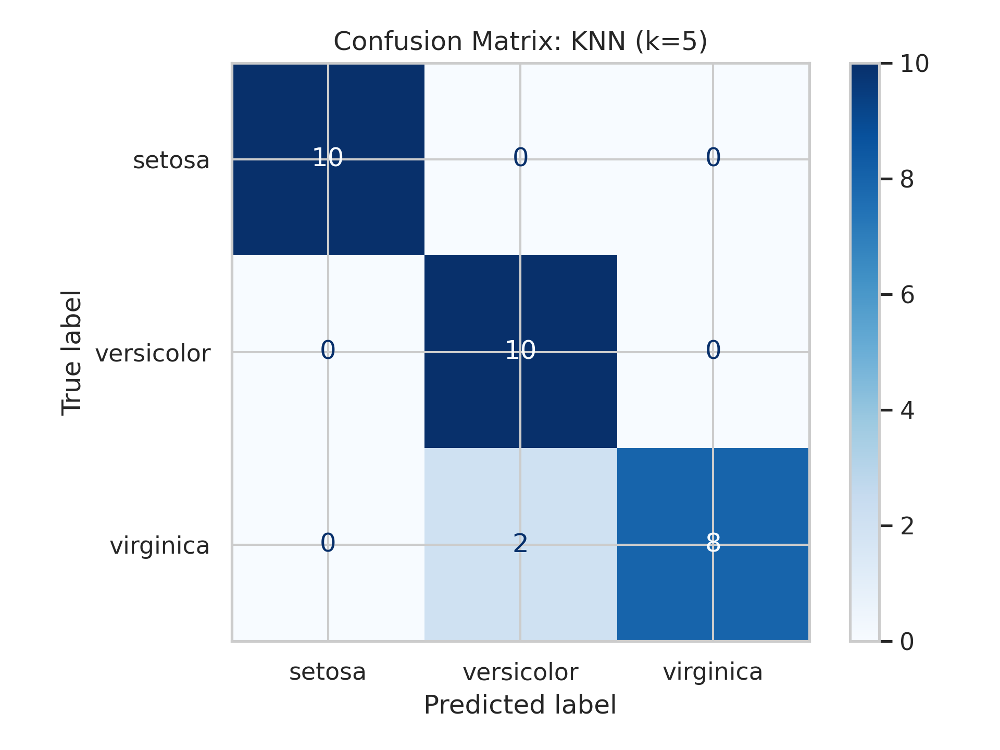

Task Description
This project builds a classification model on the Iris dataset supplied by the lecturer. The dataset has 150 flowers, each with four measurements (sepal length, sepal width, petal length, petal width) and one of three species: setosa, versicolor or virginica. The model was trained in Python (scikit-learn) and runs in this page using JavaScript.
Try the Model
Enter the four measurements in centimetres and click Predict.
Model Evaluation
Results on the 30 flowers held back as a test set.
Accuracy—
Precision—
Recall—
F1 Score—
Per-Species Results
| Species | Precision | Recall | F1 Score | Test samples |
|---|
Data Exploration and Results




